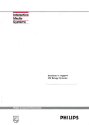
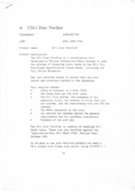
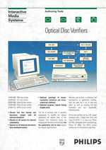

Brochures - CD-i authoring products
On this page, you will find scans of CD-i authoring product overviews published by Philips Media in Portable Document Format, you need Adobe Acrobat Reader to view or print them.
Please note that the addresses mentioned in these documents are not valid anymore.
- Authoring Products overview
This document contains one or two page overviews of Philips Authoring Products from the Philips TSA product catalogue as of April 1994.
Download authoring_products.pdf (PDF, 23 pages)
|
- Authoring Products price list
This document contains a price list for Philips Authoring Products as of April 1994.
Download authoring_price_list.pdf (PDF, 7 pages)
|
- Products to support CD Bridge Systems
This document contains one page overviews of products to support Karaoke-CD and Photo-CD as well as the following disc verifiers, ending with a price list as of August 1993:
- 22SW1696/00 FMV disc verifier
- 22SW1697/00 CDI_struct
- 22SW????/?? CD-i disc verifier
- 22SW1698/20 Karaoke CD disc verifier
- 22SW1699/20 Photo CD disc verifier
Download cdbridge_products.pdf (PDF, 14 pages)
|
 |
- Disc verifiers information
This document contains short overviews of the following disc verifiers, dated somewhere between October 1993 and February 1994:
- 22SW1696/00 FMV verifier
- 22SW1697/40 CD-i disc verifier
- 22SW1698/40 Video CD disc verifier
- 22SW1699/40 Photo CD disc verifier
Download disc_verifiers_info.pdf (PDF, 7 pages)
|
 |
- Optical Disc Verifiers
This brochure describes the following disc verifiers as of February 1994:
- 22SW1696/02 FMV disc verifier
- 22SW1697/42 CD-i disc verifier
- 22SW1698/40 Video CD disc verifier
- 22SW1699/42 Photo CD disc verifier
- 22SW1702/00 MPEG stream verifier for PC
- 22SW1702/06 MPEG stream verifier for SUN
Download optical_disc_verifiers.pdf (PDF, 4 pages)
|
 |
|

{kind=link}
{kind=link}
{kind=link}